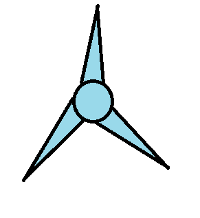

<ion-card>
  <ion-card-header>
    <ion-card-title>Vientos del Este</ion-card-title>
    <ion-card-subtitle>Lista de Piezas</ion-card-subtitle>
  </ion-card-header>
  <ion-card-content>
    <ion-list>  
      <table class="table table-striped table-hover">
        <thead>
            <tr>
                <th>Cat.</th>
                <th>Foto</th>
                <th>Alt</th>
                <th>R Eolica</th>
                <th>Mat</th>
            </tr>
        </thead>
        <tbody>
            <tr *ngFor="let Partes of partList">
                <td> {{ Partes.Categoria }} </td>
                <td> 
                   <ion-img >
                    
                  </ion-img>
                </td>
                <td> {{ Partes.Altura}} </td>
                <td> {{ Partes.ResistenciaEolica }} </td>
                <td> {{ Partes.Material }} </td>
            </tr>
        </tbody>
    </table>
    </ion-list>
  </ion-card-content>
</ion-card>